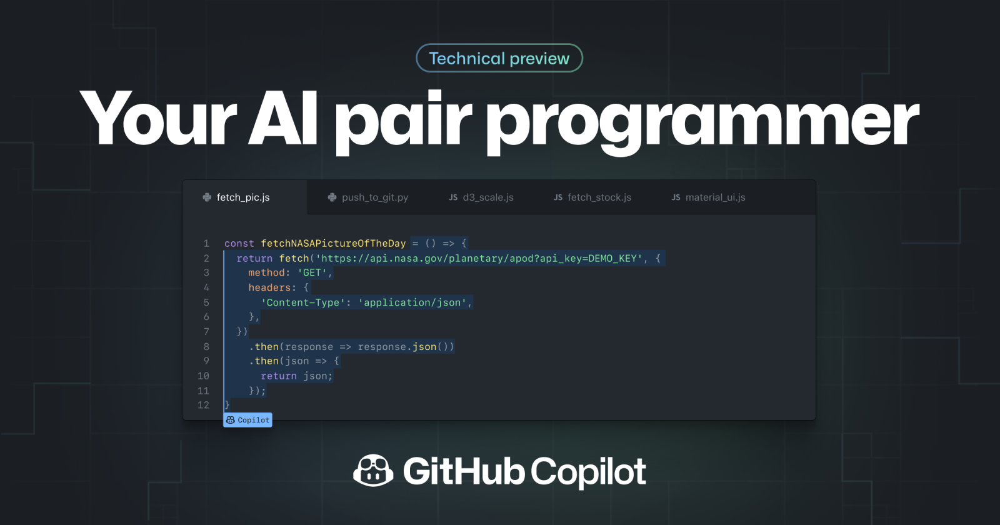
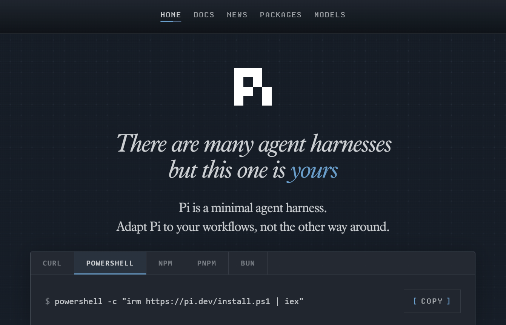

flowchart TD
Dev["👨💻 Developer\n(Factory Manager)"]
subgraph Factory["🏭 The Factory"]
direction TB
Spec["📋 Specifications\n& Context"] --> Agents["🤖 AI Agents\n(Implementation)"]
Agents --> Tests["✅ Tests\n& Quality Gates"]
Tests --> FL["🔄 Feedback\nLoops"]
FL --> Agents
GR["🛡️ Guardrails\n& Constraints"] --> Agents
end
Dev --> Factory
Factory --> Code["📦 Production\nCode"]
style Factory fill:#1a1a2e,stroke:#4a4a8a,color:#fff
style Dev fill:#533483,stroke:#7a5ab5,color:#fff
style Code fill:#1a3d1a,stroke:#4a8a4a,color:#fff
Mental Model for Agentic System
Abstract
Generative AI is changing software development by progressively transferring control from the developer to the machine. As this delegation expands from individual lines of code to complete workflows, the developer’s role shifts from writing code to designing, supervising, and governing the systems that produce it.
Software development offers a striking illustration of the speed at which generative AI has evolved and been adopted. Developers were instrumental in building and advancing this technological revolution, but they are also among the first to experience its disruptive effects.
Within only a few years, AI systems have progressed from simple coding assistants to increasingly autonomous agents capable of planning, writing, testing, and modifying code with limited human oversight.
Agentic coding does not eliminate software engineering, but rather moves engineering effort from writing code to designing the environment in which implementations can be produced, tested, and trusted.
What happens when AI progresses from suggesting code to controlling increasingly large portions of the development process?
From Assistance to Collaboration
The evolution of AI-assisted development can be understood as a gradual transfer of control, from individual lines of code to complete software-production workflows.
A New Paradigm
A new paradigm, in which developers express what they want to build rather than how to build it, has emerged. Rather than following a strict chronological eras that replace one after another, we should think as different levels of abstraction. Autocomplete, chat, synchronous agents, background agents, and autonomous workflows continue to coexist and varies accros industries.
Level 1: Autocompletion
The first generation was autocomplete. Tools, like Github Copilot in 2021, predicted the next line, filled in boilerplate, and saved keystrokes on repetitive patterns.
Even though the feature is useful and genuinely time-saving, the workflow stayed identical. Software engineers wrote code, ran it, debug, and repeat. AI tool assisted by reducing friction.

At this level, AI accelerates typing, but it does not control the development process.
Level 2: Collaboration
The second generation introduced synchronous AI assistants. You described a task in natural language, and the model generated code in response. As Andrej Karpathy famously wrote in January 2023:
“The hottest new programming language is English.”
This phrase perfectly captures an era defined by a continuous back-and-forth between a developer and a generative AI chatbot. The model generated an initial version of the code, which you then reviewed, corrected, and refined through successive prompts until you reached a working result.
This represented another step up the delegation stack. Compared with the previous generation, the developer spent less time writing code directly and more time describing their intent. However, human involvement was still required at every stage. The AI acted as a collaborator, not as an autonomous worker. You retained the overall context, decided what should happen next, and identified mistakes as they occurred.
The hottest new programming language is English
— Andrej Karpathy (@karpathy) January 24, 2023
The AI is a collaborator, not an autonomous worker. It can propose an implementation, but the developer still holds the overall context and directs each successive action.
Vibe Coding as a Transitional Stage
What is Vibe Coding
Two years after declaring English to be the “hottest new programming language”, Andrej Karpathy coined the term vibe coding. He described it as a way of programming in which you “fully give in to the vibes, embrace exponentials, and forget that the code even exists.”
There's a new kind of coding I call "vibe coding", where you fully give in to the vibes, embrace exponentials, and forget that the code even exists. It's possible because the LLMs (e.g. Cursor Composer w Sonnet) are getting too good. Also I just talk to Composer with SuperWhisper…
— Andrej Karpathy (@karpathy) February 2, 2025
Vibe coding reflects the growing capabilities of generative AI tools and their expanding role in software development. In this approach, users express what they want to build through natural-language prompts or speech, and an AI system translates those instructions into executable code. Rather than focusing on syntax or implementation details, the user concentrates on the desired outcome and guides the system through successive iterations.
However, vibe coding is more than simply using an AI coding assistant. It requires trust in the model and interaction with the resulting software. Therefore, rather than understanding its source code, you primarily engage with it like a final users would have. This conversational cycle continues until the application appears to work as intended.
By prioritising experimentation over immediate improvements to structure and performance, vibe coding adopts a “build first, refine later” mindset. It can therefore support rapid prototyping, iterative development, and short feedback loops. These qualities are broadly consistent with agile development practices, as they allow developers to test ideas and produce prototypes quickly.
Speed comes with a trade-off. When users accept generated code without fully reviewing or understanding it, they may accumulate technical debt, introduce hidden vulnerabilities, or create systems that become difficult to maintain. Vibe coding can accelerate the production of a working prototype, but it does not eliminate the need for software engineering discipline.
From Collaboration to Delegation
Level 3: Delegation
The third generation marks the shift from collaboration to delegation. Instead of guiding the AI step by step, the developer defines an outcome and allows an autonomous agent to manage the workflow.
The agent can inspect a repository, plan changes, modify multiple files, install dependencies, run tests, diagnose failures, and submit a pull request. It may work independently for minutes or hours while the developer focuses on other tasks.
The level of abstraction is no longer a line of code or a prompt, but an entire task. Human involvement moves from continuous direction to asynchronous supervision: the agent executes the work, while the developer sets the constraints, reviews the results, and remains accountable for the final decision.
— Michael Truell (@mntruell) February 25, 2026
From Delegation to Orchestration
Level 4: Orchestration
A fourth level is now emerging: orchestration. Instead of delegating an entire task to a single agent, a human or coordinating system divides the work among multiple specialised agents, manages dependencies, and routes their outputs through testing and verification.
At this level, the developer no longer supervises individual tasks but oversees a system of agents working together. The focus shifts from directing execution to designing workflows, setting boundaries, and defining how results will be evaluated.
Autonomy is not binary. It is the gradual transfer of control over increasingly large portions of the development loop.
The Factory and Its Operator
To continue the metaphor of AI agent as a digital worker, real world factories builds cars, appliances, etc. Over the last couple of centuries they have refined the production of goods to mostly automate the production lines.
The factory is the system
The factory model offers a useful metaphor to understand this transformation. As AI takes over more of the implementation process, the developer’s primary output is no longer just code. It is the system that reliably produces code.
That system combines clear specifications, relevant context, capable agents, automated tests, quality gates, and feedback loops. Agents generate the implementation, tests expose failures, and those failures are fed back into the system for correction. Guardrails define what agents can change, which tools they can use, and when human approval is required.
In this model, the developer resembles the architect of an assembly line rather than a worker at a single station. Their role is to design the workflow, establish quality standards, and ensure that errors are detected before they reach production.
The central skill is therefore no longer describing every step. It is defining the desired outcome, setting clear constraints, and creating reliable ways to verify the result. The better the production system, the less human intervention each individual task requires.
The developer does not merely produce code. They design the system through which code is produced, tested, corrected, and approved.
The Dark Factory
The dark factory mental model extends on the factory model to its logical, but still emerging, conclusion. The term describes a fully automated facility in which machines operate without human workers on the floor. Because no one needs to see, the lights can be switched off. Applied to software development, it represents a production system in which agents could receive objectives, divide the work, write and test the code, correct failures, and deploy the result without human intervention.
In such a system, developers would no longer supervise each task or approve every pull request. Instead human judgment would be embedded in advance through specifications, policies, quality thresholds, security controls, and escalation rules. Agents would then operate the software factory continuously, involving people only when they encountered a situation outside those predefined boundaries.
This is not yet another established level of agentic coding. It is an emerging idea about where increasing autonomy might eventually lead. Today’s agents still require human oversight, particularly when requirements are ambiguous, consequences are significant, or correctness cannot be verified automatically. The dark factory should therefore be understood not as the current state of software development, but as its automation frontier.
The metaphor also exposes an important paradox: switching off the lights does not remove human responsibility. It merely moves human involvement outside the factory. People must still decide what the system should build, which constraints it must respect, how success will be measured, and when production should stop.
The lights go out not because humans have disappeared, but because their judgment has been encoded into the factory itself.
Think of an AI agent as a digital worker made up of five essential parts:
- The model is its brain.
Usually powered by a large language model, it examines the situation, reasons about what to do next, and produces a thought, an action, or a response.
- Tools are its hands.
They allow the agent to act in the outside world by calling APIs, running code, searching databases, or asking other agents for help.
- Memory is its notebook.
It helps the agent remember previous interactions, retrieve project-specific instructions, and preserve useful information from one task or session to another.
- Orchestration is its nervous system.
It coordinates the entire process: feeding information to the model activating the right tools, collecting their results, and deciding whether the agent should continue or stop.
- Deployment is its workplace.
It provides the infrastructure the agent needs to operate reliably in the real world, including hosting, identity management, monitoring, security, and production systems.
Harness
- https://www.langchain.com/blog/the-anatomy-of-an-agent-harness
- https://www.datacamp.com/blog/agent-harness
- https://mitchellh.com/writing/my-ai-adoption-journey#step-5-engineer-the-harness
- https://lucumr.pocoo.org/2026/7/4/better-models-worse-tools/
- https://simonwillison.net/2026/Jul/4/better-models-worse-tools/
| We view harness engineering as a subset of context engineering. Coined by my cofounder Dex in 12-factor agents, context engineering is a superset of “prompt engineering” and a variety of other techniques for systematically improving AI agents’ reliability. You can find the original talk on here. |
| Harness engineering then is the subset of context engineering which primarily involves leveraging harness configuration points to carefully manage the context windows of coding agents. https://www.humanlayer.dev/blog/skill-issue-harness-engineering-for-coding-agents |
Harness Engineering: What Surrounds the Model
There is a temptation to treat the model as the system. A new model comes out, the agent gets smarter. That intuition is wrong, and it leads to the wrong investments.
A raw model is not an agent. It becomes one once a harness gives it state, tool execution, feedback loops, and enforceable constraints. The behaviour developers experience when working with Claude Code, Cursor, Codex, Aider, or Cline is dominated by what the harness does, not just by which model is underneath.
\[\text{Agent} = \text{Model} + \text{Harness}\]
flowchart TB
subgraph Harness["🔧 The Harness"]
direction TB
IR["📜 Instructions &\nRule Files\n(AGENTS.md, CLAUDE.md)"]
Tools["🛠️ Tools\n(APIs, MCP Servers)"]
Sandbox["📦 Sandboxes &\nExecution Environments"]
Orch["🔀 Orchestration Logic\n(Sub-agents, routing)"]
GR["🛡️ Guardrails / Hooks\n(Lifecycle checkpoints)"]
Obs["📊 Observability\n(Logs, traces, evals)"]
end
Model["🧠 Model\n(Reasoning Engine)"] --> Harness
Harness --> Agent["🤖 Agent\n(Working System)"]
style Harness fill:#1a1a2e,stroke:#4a4a8a,color:#fff
style Model fill:#533483,stroke:#7a5ab5,color:#fff
style Agent fill:#1a3d1a,stroke:#4a8a4a,color:#fff
What’s in the Harness
- Instructions and Rule Files — the text that defines who the agent is, what it cares about, and what it is forbidden from doing. Includes
AGENTS.md,CLAUDE.md,GEMINI.md, skill files, and sub-agent prompts. - Tools — the functions, MCP servers, and APIs the agent can call, plus the prose that tells the model when and how to call them.
- Sandboxes and execution environments — where the agent’s code actually runs, what it has access to, what it cannot reach.
- Orchestration logic — sub-agent spawning, model routing, hand-offs between specialists, and the rules that govern when each fires.
- Guardrails / Hooks — deterministic code that runs at specific lifecycle points: before a tool call, after a file edit, before a commit. Hooks are the place for things the agent should never forget but often does.
- Observability — logs, traces, evaluations, cost and latency metering. Without observability, there is no way to tell whether the agent is doing well or quietly drifting.
Harness in SDLC
flowchart LR
subgraph P1["Phase 1\nRequirements & Architecture"]
H1["⚙️ Configure\nInstruction files,\ntool access, rules"]
end
subgraph P2["Phase 2\nImplementation"]
H2["▶️ Run\nSandboxes,\nexecution environments,\ntools"]
end
subgraph P3["Phase 3\nTesting & QA"]
H3["🔄 Feedback Loop\nOrchestration logic,\nguardrails → self-correction"]
end
subgraph P4["Phase 4\nReview, Deploy & Maintain"]
H4["👁️ Observe\nHooks, observability,\naudit trails"]
end
P1 --> P2 --> P3 --> P4
style P1 fill:#1a2a3d,stroke:#4a6a8a,color:#fff
style P2 fill:#1a3d1a,stroke:#4a8a4a,color:#fff
style P3 fill:#3d2a1a,stroke:#8a6a4a,color:#fff
style P4 fill:#2d1a3d,stroke:#6a4a8a,color:#fff
Most Agent Failures are Configuration Failures
When an agent does something wrong, the first instinct is to blame the model. More often, the failure traces back to a missing tool, a vague rule, an absent guardrail, or a context window stuffed with noise. Public benchmarks confirm this: one team moved a coding agent from outside the Top 30 to the Top 5 on Terminal Bench 2.0 by changing only the harness, with no model change at all.
- Requirements, Planning, & Architecture (Configuring the Harness) This is where the harness is configured and calibrated. Before the AI writes any production code, the developer must set up the agent’s environment. • Harness Configuration: Providing the Instructions and Rule Files (e.g., creating the AGENTS.md and defining architectural constraints) that the harness will load and make available to the model. • The Action: The developer defines the tools the agent will have access to (like specific APIs or database schemas) and sets the fundamental rules the agent cannot break.
- Implementation (Running the Harness) During active coding, the harness acts as the boundary that keeps the AI model focused, secure, and productive. • Harness Components Used: Sandboxes, Execution Environments, and Tools. The Action: As the model generates code, it executes it within the harness’s isolated sandbox. If the model needs to read a file or search the web, it uses the tools provided by the harness.
- Testing & QA (The Feedback Loop) Testing in an agentic workflow relies heavily on the harness to facilitate autonomous self-correction. • Harness Components Used: Orchestration Logic and Guardrails. • The Action: When the agent writes a function, the harness provides the execution environment (such as a sandboxed terminal) that allows the automated tests to be executed. If a test fails, the orchestration logic captures the error output from that environment and routes it back to the model, asking it to try again. The harness is what creates this automated ‘think -> act -> observe’ loop.”
- Code Review, Deployment, & Maintenance (Observing the Harness) Even after the code is written, the harness ensures the agent behaves safely in live or near-live environments. • Harness Components Used: Hooks and Observability. • The Action: The harness runs deterministic hooks (e.g., blocking a commit if the agent tries to push a hard-coded password). Furthermore, the observability layer tracks token costs, latency, and agent drift, allowing human engineers to audit exactly why an agent made a specific deployment decision. The transition from ‘vibe coding’ to ‘agentic engineering’ is not simply about the tools you use—a developer can vibe code or apply agentic engineering using the exact same agent. Instead, it is defined by how deliberately you configure and apply the harness. Vibe coding relies on minimal or implicit scaffolding aimed purely at rapid implementation. Agentic engineering relies on clear, extensive harness abstractions that guide the AI from the very first planning document all the way through to production monitoring. The impact of this deliberate configuration is highly measurable. Public benchmarks make the size of the harness effect concrete. On Terminal Bench 2.0, one team moved a coding agent from outside the Top 30 to the Top 5 by changing only the harness, with no model change at all. A separate study at LangChain raised a coding agent’s score on the same benchmark by 13.7 points by tweaking only the system prompt, tools, and middleware around a fixed model. The everyday version of this observation is crucial for teams adopting AI across the SDLC: when an agent does something wrong, the first instinct is to blame the model. More often, the failure traces back to a missing tool, a vague rule, an absent guardrail, or a context window stuffed with noise. Most agent failures, examined honestly, are configuration failures.
Agent Harness vs. RALPH Loop: Understanding the Architecture of Modern AI Agents
Intro hint:
Explain the confusion: people often mix “how an agent runs” vs “how an agent thinks.” Introduce both terms and why the distinction matters for anyone building or studying agentic systems.
Why This Distinction Matters
Hint:
Briefly explain that modern AI systems are no longer just prompts—they are structured systems. Emphasize that understanding the difference helps in designing, debugging, and scaling agents.
What Is an Agent Harness?

A Practical Definition
Hint:
Define the harness as the environment/runtime that enables an agent to operate (tools, execution, memory, constraints).
Core Components of an Agent Harness
Hint:
List and briefly orient the reader on:
- Tooling (APIs, code execution, browsing)
- Memory (state, logs, persistence)
- Control system (loop orchestration)
- Observability (logs, traces)
- Safety/guardrails
Mental Model: The “Body” of the Agent
Hint:
Use analogy: harness = body/environment, agent = brain. Helps anchor intuition.
What Is a ReAct / RALPH Loop?
The Core Idea: Iterative Reasoning
Hint:
Explain that loops define how the agent cycles through thinking and acting.
The ReAct Loop (Reason + Act)
Hint:
Introduce the canonical loop: Observe → Think → Act → Observe → repeat
Mention it’s the foundation of many modern agents.
The RALPH Loop (An Extended Reasoning Pattern)
Hint:
Explain it as a richer variant (Reason, Act, Learn, Plan, Hypothesize).
Highlight that it introduces planning and learning steps.
Mental Model: The “Cognitive Cycle”
Hint:
Frame loops as the agent’s internal thinking process—like a decision-making rhythm.
How They Work Together
The Key Relationship
Hint:
State clearly:
The loop runs inside the harness
One is behavior, the other is infrastructure
Putting It Together in a Real System
Hint:
Describe a concrete example (e.g., coding agent, research agent).
Separate:
- what the harness provides
- how the loop drives actions
Common Confusion (and Why It Happens)
Hint:
Explain that frameworks blur the line because they bundle both (e.g., LangChain, AutoGen).
From Theory to Practice
Frameworks as Agent Harnesses
Hint:
Mention modern tools that implement harnesses (without going too deep): orchestration frameworks, agent platforms.
Research as Loop Innovation
Hint:
Position research work (ReAct, reflection loops, planning methods) as improvements to reasoning patterns—not the infrastructure.
Final Takeaway
The One-Sentence Distinction
Hint:
Give a crisp takeaway:
Agent harness = where the agent runs
Loop (ReAct / RALPH) = how the agent thinks
Why This Will Matter Increasingly
Hint:
Brief forward-looking note: as agents get more autonomous, separating system design (harness) from cognition (loop) will be critical.
Practical Patterns
- Agent-first drafts with tight iteration loops
Don’t use AI for one-off suggestions. Generate entire first drafts, then refine. The Claude Code team practice: have the model review its own code with a fresh context window. This catches issues before human review.
- Declarative communication
Spend 70% of effort on problem definition, 30% on execution. Write comprehensive specs, define success criteria, provide test cases up front. Guide the agent’s goals, not its methods.
- Automated verification
If you repeatedly fix the same class of mistake, write a test or lint rule preemptively. Make the agent explain its code and flag potential problems before you review.
The Pareto Law
= https://addyo.substack.com/p/the-80-problem-in-agentic-coding
Andrej Karpathy Twitter / X
= Boris Cherney : > “Pretty much 100% of our code is written by Claude Code + Opus 4.5. For me > personally it has been 100% for two+ months now, I don’t even make small edits > by hand. I shipped 22 PRs yesterday and 27 the day before, each one 100% > written by Claude. I think most of the industry will see similar stats in the > coming months - it will take more time for some vs others.”
…WIP…
Let AI do 80% of the work and focus your energy on the 20% left.
The 80% Problem
A persistent challenge: AI agents can rapidly generate approximately 80% of the code for a feature, but the remaining 20% — edge cases, error handling, integration points, and subtle correctness requirements — demands deep contextual knowledge that current models often lack.
The nature of AI errors has evolved from simple syntax mistakes to more insidious conceptual failures: wrong assumptions about business logic, missing edge cases, and architectural decisions that create subtle long-term maintenance burdens. These errors are harder to detect because the code “looks right” and may even pass basic tests.
Tip
The developers who navigate this challenge most effectively use AI for what it’s good at (rapid implementation of well-specified tasks) while reserving their own attention for what AI struggles with (ambiguous requirements, architectural trade-offs, and correctness verification).
Where to Start
Set up an
AGENTS.mdfor the project. Start with ten lines: stack, conventions, hard rules, workflow. Add a rule every time the agent does something it should not do again.Install a set of skills for your coding agents (like Agents CLI) to build, evaluate, deploy and optimize agents.
Pick one repetitive workflow and make it the first agent. A research workflow, a code review process, a recurring report. Use a coding agent for the prototype, graduate it to a production agent when it earns its keep. Building one agent end to end teaches more than reading about a hundred.
Write the tests and evals before generating the code. Together they are the contract with the AI. A well-written test and eval suite communicates intent more precisely than any natural-language prompt, and turns AI-assisted development from vibe coding into agentic engineering.
Review every line the agent produces that is going to ship. Be skeptical of anything that looks clever. Check imports for real packages. Verify that error handling covers realistic failure modes.
Maintain your developer skills. AI handles the routine so the developer can focus on the challenging. That arrangement only works if foundational skills — debugging, system design, intuition for performance and correctness — stay sharp.
Make context engineering a first-class engineering practice. Treat
AGENTS.md, system prompts, eval suites, and skill libraries as code: reviewed in pull requests, versioned with the project, owned by named engineers.Set the bar at the eval, not the demo. A working demo proves an agent can succeed once. A passing eval suite proves it succeeds reliably. Define what you are scoring: task success, tool use quality, trajectory compliance, hallucination, and response quality.
Re-shape code review for AI-generated code. Extra attention to hallucinated dependencies, inadequate error handling, and subtle correctness gaps that look right at a glance.
Distinguish prototyping work from production work in team norms. Vibe coding is the right speed for exploration. Agentic engineering is the right discipline for production. Make the boundary explicit.
Invest in harness components as a shared team asset. Reusable system prompts, skill libraries, MCP server connections, and evaluation harnesses compound across projects. Treat them as infrastructure.
Treat AI-assisted development as an engineering investment, not a productivity feature. Rolling out a coding agent without eval coverage, observability, and clear architectural standards produces speed without quality.
Invest in the production substrate before scale. What graduates a vibe-coded prototype to production is operations discipline: trajectory and final-response evals in CI, traces of every agent run, scoped permissions, and security review tuned to generated code’s failure modes.
Adopt open standards. Model Context Protocol (MCP) for tool access and Agent2Agent (A2A) for cross-agent delegation are converging into the connective tissue of multi-agent systems.
Plan for hybrid teams of humans and agents. The strongest production results come from architectures where humans set direction, agents do the implementation, and clear handoff protocols govern the boundary.
Reframe hiring and skill development around judgment, not just implementation. The most valuable engineers in the next several years will be the ones who can direct agents well, not the ones who can write the most code.
——- ####### TO REVIEW ########—————- An AI agent is a software system that perceives a goal, plans steps to reach it, takes actions through tools, observes the results, and iterates until the goal is met or it hits a stopping condition. Where a chatbot produces a response and waits for the next prompt, an agent runs its own loop. You give it a goal at the top, then it decides what to do next at each step.
References
The Factory Model: How Coding Agents Changed Software Engineering = https://addyosmani.com/blog/factory-model/ The third golden age of software engineering – thanks to AI, with Grady Booch = https://newsletter.pragmaticengineer.com/p/the-third-golden-age-of-software 5-Day AI Agents: Intensive Vibe Coding Course With Google = https://www.kaggle.com/learn-guide/5-day-agents-vibecoding